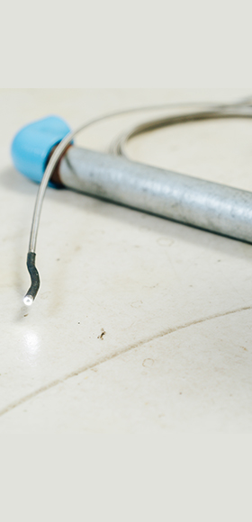
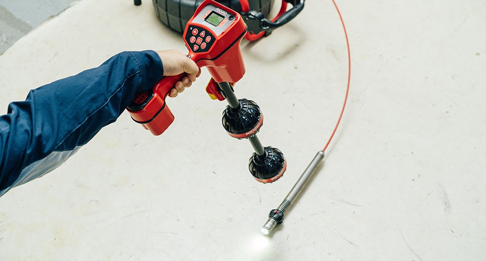

業界歴30年以上
排水管・給水管の内視鏡調査で
トラブルの原因をいち早く
見つけます！
以下のテキストに差し替えてください。
水のトラブルは建物の寿命に関わるものであり、定期的な調査が欠かせません。
配管専門の調査会社に調査を依頼し、トラブルの正確な原因をスピーディーに把握して
適切な対処をとることが大切です。
当社は排水管・給水管の内視鏡調査を行う専門の会社ですので、
安心してお任せいただけます。セカンドオピニオンにも対応が可能です。
その他、様々な調査が可能です！
PROFESS
IONAL

professional
「建物が長生きするため」「セカンドオピニオンとして」
調査は専門会社に依頼すること
をおすすめします
-
専門的な知識でより詳しい
見積もり・報告書の作成が可能 -
正確なトラブルの原因がわかり
解決が早い -
しなくていい修理に気づき
コストを抑えられる
contact お問い合わせ
ご相談、お見積りのご要望など お気軽にご連絡ください
trouble 排水管・給水管・漏水について こんな“お悩み”や“トラブル”ありませんか？
-
排水管から
悪臭がする -
長期終戦計画のため
調査をお願いしたい -
水が流れるたびに
配管から音が鳴っている -
他社の調査見積もりと
比較したい -
蛇口から赤水がでた
endoscope
内視鏡調査ならトラブルの元を
綿密に調べることができます
トラブル前
定期調査でトラブルを未然に防ぐ
キッチンやお風呂などから排出される水を送り出す排水管や、生活に必要な水を供給する給水管にはメンテナンスと併せて定期的な調査が欠かせません。適切に実施し、トラブルを未然に防ぎましょう。
排水管と給水管のしくみやトラブルが起きる要因、配管調査の重要性などについてご紹介します。
トラブル後
迅速な対応で被害を最小限に
「水詰まりがくり返し起きている」「蛇口から赤水が出てきた」「排水管から悪臭がする」などすでにトラブルが起きている場合には、大ごとになる前に原因を追及することが大切です。トラブルを放置するとシロアリが発生したり、漏電事故を招いたりといったリスクが生じます。排水管・給水管の内視鏡調査でトラブルの正確な原因を突き止め、早急に対処しましょう。